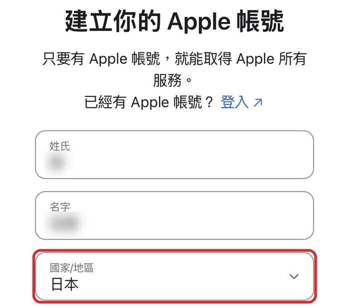
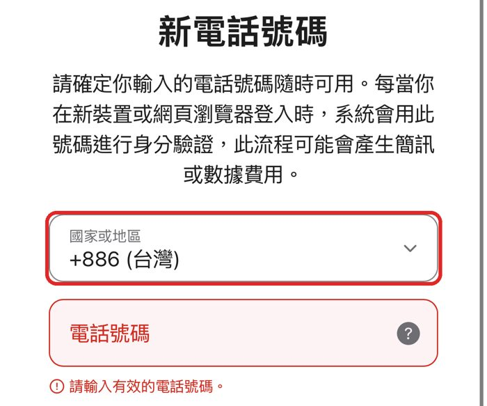

iPhone · 免信用卡
Apple 用戶如何下載日本 App
有些日本 App 只在日本區 App Store 上架。另外申請一個日本區 Apple ID，只在 App Store 登入，iCloud、照片都不受影響。
為什麼要開新帳號？不要直接把原本的帳號改成日本區：要先取消所有訂閱、用完帳戶餘額，還要日本的付款方式。
先準備
- 一個沒註冊過 Apple 帳號的 Email（新開一個 Gmail 就可以）
- 自己的手機（收驗證碼）
1申請帳號（用 Safari）
- 用 Safari 打開 Apple 帳號註冊頁前往註冊頁
- 填姓名，國家／地區選「日本」

- 填生日、Email、密碼Email 要是沒註冊過 Apple 帳號的
- 電話號碼的國家或地區選「+886（台灣）」填自己的手機，開頭的 0 不用打

- 輸入 Email 和手機收到的驗證碼帳號就建好了
帳號選日本、電話選台灣。驗證碼會傳到這支電話，一定要填自己的手機，不能填住宿電話。
2下載 App
- 只登出 App Store設定 → 最上方你的名字 → 媒體與購買項目 → 登出（iCloud 不會登出）
- 用日本帳號登入 App Store再點「媒體與購買項目」登入。跳出「檢查帳號資訊」時：同意條款 → 付款方式選「なし」（無）
- 搜尋要下載的 App，下載
- 換回原本的帳號媒體與購買項目 → 登出 → 登入原本的帳號。App 照常能用，只有更新它時需要再換回日本帳號
資料來源
整理於 2026/11/05。Apple 的註冊畫面可能改版，以實際畫面為準。